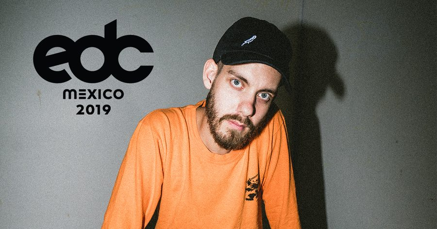

San Holo Showcases His Stunning Melodic Sensibilities With Euphoric EDC Mexico 2019 Mix


Dutch producer, instrumentalist, DJ, and live performer San Holo has ascended swiftly into the biggest festival lineups—though, his striking talent and unique sound means the hype is well deserved. Earning early interest from stables such as Spinnin’, OWSLA, and Monstercat, it was his 2016 smash “Light” on his own bitbird label that truly threw his colorful, melodic sound into the spotlight.
Racking up in excess of 130 million streams on Spotify, “Light” actually represents the perfect encapsulation of the San Holo sound. It’s the broken beats and heavy bottom-end of trap and future bass music, the melody and euphoria of EDM, plus an unmistakable musicality that results from his classical musical training and extensive experience of playing guitar with bands before cracking it big in electronic music.
Otherwise known as Sander van Dijck, he says his background studying music and playing guitar has translated smoothly into his DJing and performances, which often sees him brandishing said guitar.
“I’ve played a lot of shows as a guitar player with bands previous to San Holo, so I was lucky to already have some ‘stage experience’ before I began DJing. My current album shows are the most musical and the combination of DJing, triggering samples, singing and playing guitar is super fun to do.”
The album he speaks of is actually his rather simply titled debut album1 that arrived late last year, and when we speak to him, he’s actually flying high after discovering it was good enough to win him ‘Best Dance Album’ at the Edison Awards, described as the Dutch equivalent to the Grammys.
“I’m very proud of what I accomplished with the team last year,” he says. “Right now, I’m back home getting some rest after a few months of touring the album, but I’m looking forward to getting back on the road again soon for the European leg of the tour and then returning to North America.”
“My current album shows are the most musical and the combination of DJing, triggering samples, singing and playing guitar playing is super fun to do.”
Beyond winning him a Dutch version of a Grammy, album1 also earned itself a loving embrace from his fans, playing a big part in what made 2018 such a standout year for the producer.
“The whole of last year really was a trip. I wrote pretty much the entire album in the first half of the year, and then spent the rest of the year working on rollout before releasing it and touring. The fan response has been overwhelming, for sure. I was scared at first because I was definitely trying something different, but I think people understood what I was trying to do and appreciated it, which was a massive relief.”
It’s been an electric few years, all starting with him remixing hip-hop songs to give them the Han Solo touch and posting them on YouTube, which resulted in one of his Dr. Dre bootlegs catching viral fire and garnering hundreds and millions of streams. The likes of Skrillex were soon paying attention.
“It’s been crazy, for sure,” he says. “I remember sitting in my bedroom alone making beats not that long ago—and fast forward a few years, here I am now traveling the world playing my own music. I’m so blessed to able to make music and travel the world for a living. Right now, I’m focused on continuing to develop the new sound that I’ve been experimenting with and building out bitbird even further.”
“We just want to sign music that makes us feel some kind of way, whether that’s a trap banger or classical piano piece or an indie-pop record, we’re about it.”
His bitbird stable is edging towards its 50th release, and it was a project that was launched with a very focused mission in mind: to support emotional music whatever the genre, and to allow the artist to freely express their creativity. In the label’s own words, “be the most fair and honest label there is.”
“bitbird is a label I started a few years ago with my friend and art director Thorwald; and to release my own album independently like that felt awesome. At bitbird, when we’re signing stuff, we’re not really looking for a specific genre. We just want to sign music that makes us feel some kind of way, whether that’s a trap banger or classical piano piece or an indie-pop record, we’re about it. We also don’t care how big or small the artist is or how connected they are or any of that stuff—it’s just about the music for us.”
While he’s continued to work with some big labels alongside his own independent venture, it was actually bitbird through which he released “Light,” unsuspecting of what a smash it would turn out to be.
“I honestly didn’t think it would grow this big when I was writing it. We released with bitbird, as we would have with every other single of mine. But after some point, it just started blowing up. I think its lyrics resonate with a lot of people. And it’s also a more ‘mainstream’ song that still has my sound. I’m still humbled by the fact that people sing out the lyrics for the whole song at my shows.”
It’s a safe bet there will be a few said fans singing the lyrics of “Light” when he plays EDC Mexico later this month, and he’s prepared a special mix for the occasion to get fans and festivalgoers in the mood.
“It’s my first time in Mexico, so I’m really excited. I always get a ton of comments on my socials about not being able to visit regularly, so I’m glad I finally get that chance. My mix is a blend of songs that really inspire me, plus my own music. It might even have some new music by me in there as well, who knows.
San Holo is playing at EDC Mexico 2019, which takes place Saturday, February 23, and Sunday, February 24, at Autódromo Hermanos Rodríguez in Mexico City. Tickets are on sale now. For more information, visit the official website.
San Holo EDC Mexico 2019 Mix Track ListSan Holo ft. Sofie Winterson “lift me from the ground”
San Holo ft. the Nicholas “voices in my head”
San Holo “Fly”
Robyn “Heartbeat” (San Holo Edit)
EASTGHOST “Eyes in the Back of My Head”
Duumu “Shifted”
Losi “SUNDAY SUNDAY”
Boombox Cartel “Supernaturel” (Hundaes Remix)
San Holo “We Rise”
San Holo “Still Looking”
DROELOE x San Holo ft. CUT_ “Lines of the Broken”
San Holo “BWU”
San Holo ft. Bipolar Sunshine “brighter days”
San Holo ft. Duskus “forever free”
San Holo “show me”
Point Point “DoubleOreo” (San Holo Remix)
Doja Cat “So High” (San Holo Remix)
San Holo ft. Cassini “love” (wip)
Duskus x San Holo “Take Me Home”
San Holo “One Thing” (ILIVEHERE. Remix)
San Holo “One Thing”
San Holo “One Thing” (Myrne Remix)
San Holo “trip”
Dr. Dre “The Next Episode” (San Holo Remix)
Gesaffelstein “Hellifornia”
Outkast “Ms Jackson” (San Holo Remix)
San Holo “Hiding”
San Holo “Victory”
Hundaes “Be There”
San Holo “New Sky”
What So Not & San Holo ft. Daniel Johns “If You Only Knew”
Cesqeaux & San Holo “Who Am I”
Clams Casino “I’m God” (San Holo Edit)
Eprom “Hurricane” (San Holo Edit)
San Holo “Light” (Taska Black Remix)
San Holo “Lead Me Back”
San Holo “vestal avenue”
Follow San Holo on Facebook | Twitter | SoundCloud
Follow EDC Mexico on Facebook | Twitter | Instagram